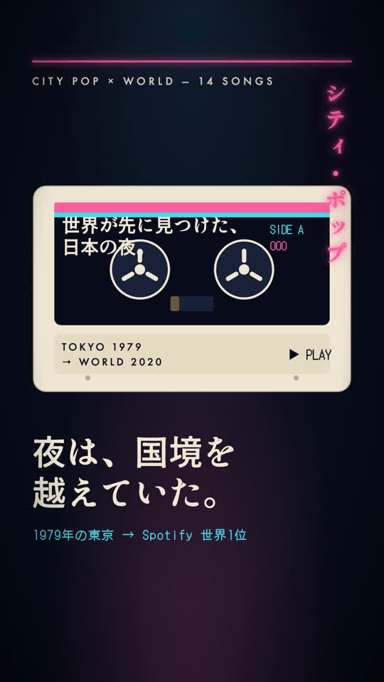
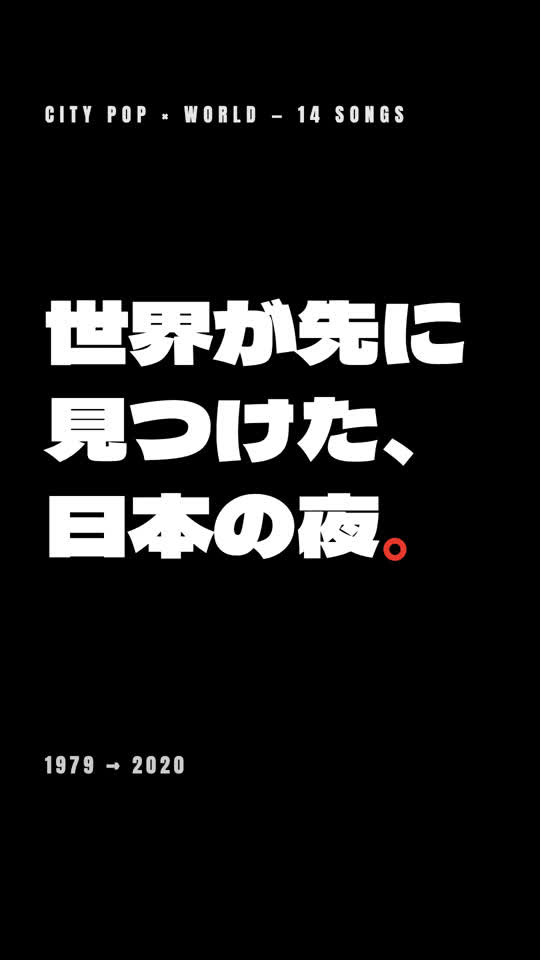
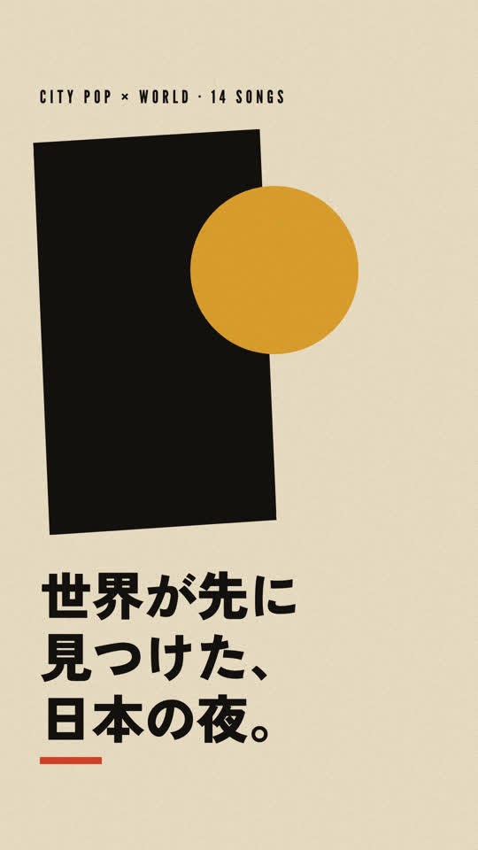
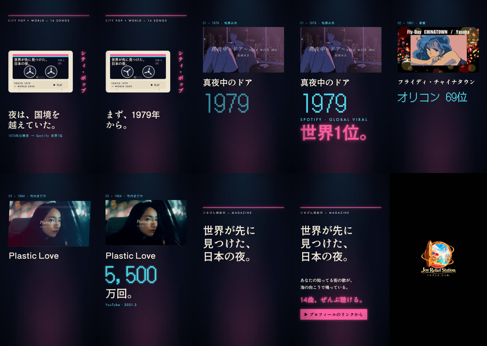
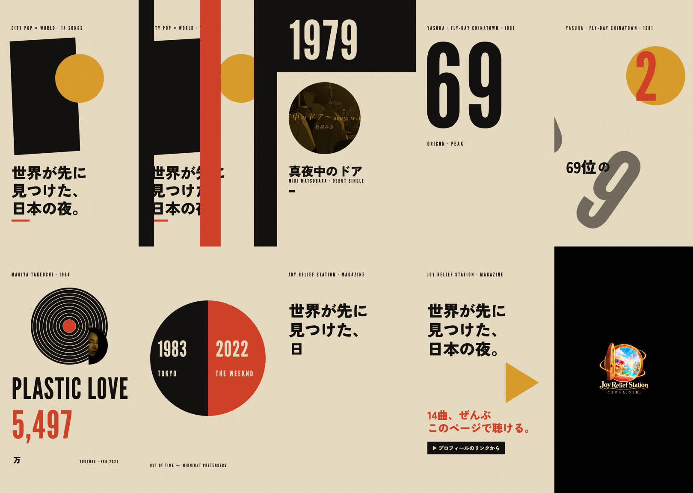

A案 0.5秒（サムネ用の1コマ）

B案 0.5秒

C案 0.5秒

A案 10コマ（0.5〜12.5秒）

B案 10コマ
C案 10コマ

[citypop_A_neon v1] Duration: 00:00:13.00, start: 0.000000, bitrate: 1427 kb/s Stream #0:0[0x1](und): Video: h264 (High) (avc1 / 0x31637661), yuv420p(progressive), 1080x1920, 1246 kb/s, 30 fps, 30 tb Stream #0:1[0x2](und): Audio: aac (LC) (mp4a / 0x6134706D), 44100 Hz, mono, fltp, 171 kb/s (default) [citypop_B_kinetic v1] Duration: 00:00:13.00, start: 0.000000, bitrate: 558 kb/s Stream #0:0[0x1](und): Video: h264 (High) (avc1 / 0x31637661), yuv420p(progressive), 1080x1920, 426 kb/s, 30 fps, 30 tbr Stream #0:1[0x2](und): Audio: aac (LC) (mp4a / 0x6134706D), 44100 Hz, mono, fltp, 122 kb/s (default) [citypop_C_saulbass v1] Duration: 00:00:13.00, start: 0.000000, bitrate: 3361 kb/s Stream #0:0[0x1](und): Video: h264 (High) (avc1 / 0x31637661), yuv420p(progressive), 1080x1920, 3186 kb/s, 30 fps, 30 tb Stream #0:1[0x2](und): Audio: aac (LC) (mp4a / 0x6134706D), 44100 Hz, mono, fltp, 164 kb/s (default) 実測: ロゴ img（Playwright getBoundingClientRect・render(12.0)・A/B/C とも） x=315 y=735 width=450 height=450 px 実測: 見本「怒れる人々」14.0秒のコマ（numpy・黒でないピクセルの範囲） width=776 height=810 px（ロゴ画像の箱は 900 px）





| 確認項目 | 結果 |
|---|---|
| 3案が別物（書体・色・動きの文法が重ならない） | A=Shippori Antique/Futura/DotGothic・紺＋ネオン・横スライド／B=Dela Gothic/Anton・黒白赤・点滅と崩れ／C=Zen Kaku Black/League Gothic・紙色＋黒＋マスタード＋朱・バーと円 |
| 第三者採点85点以上 | 54・66・68点＝未達（見本68点） |
| 13.00秒・1080×1920・H.264+AAC | ffmpeg実測・3本とも |
| 最後の2秒は新ロゴ・ズームなし・黒地・見本の半分 | 11.0〜13.0秒・ハードカット（実測は上の<pre>） |
| 拍は音から機械で実測 | numpy スペクトラルフラックス＋自己相関（A 104.0／B 128.0／C 119.95 BPM） |
| 事実は出典本文で確認 | PONY CANYON NEWS・Wikipedia（本文の該当語を取得して確認） |
| Drive非公開納品・予約投稿なし | put --anken その他 --saishin／投稿していない |